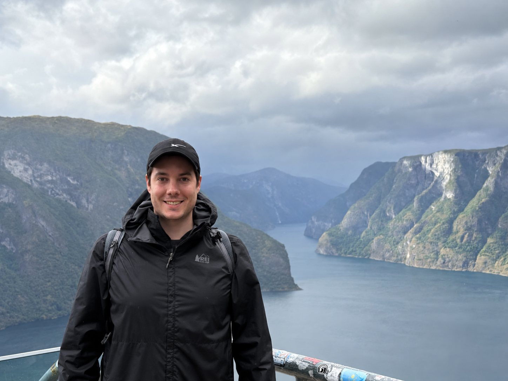
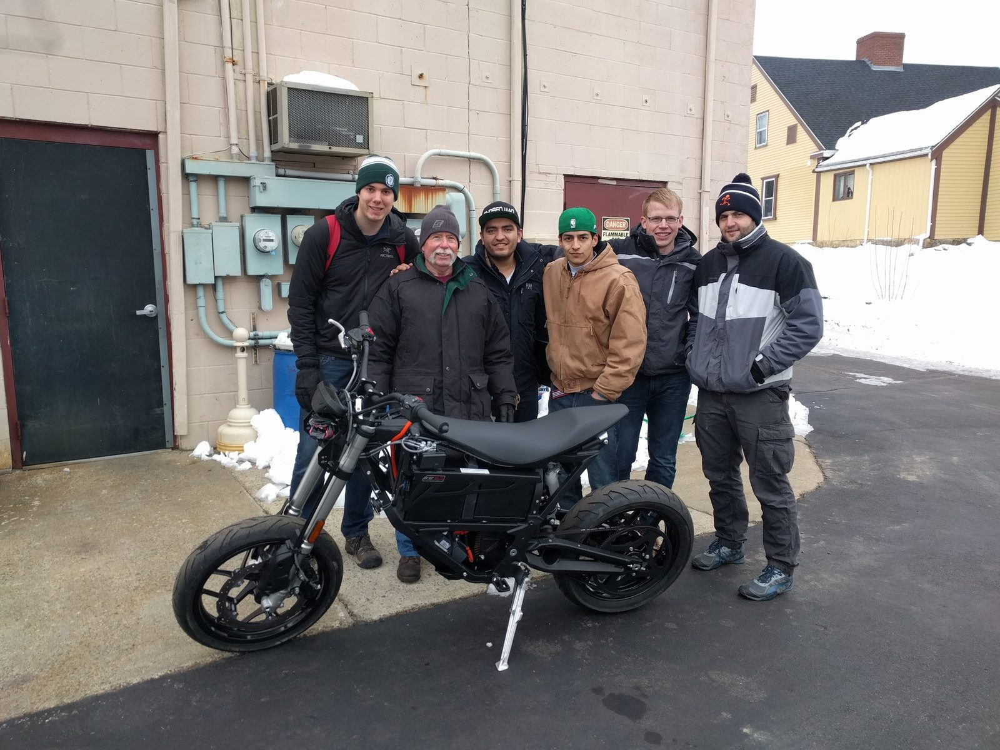
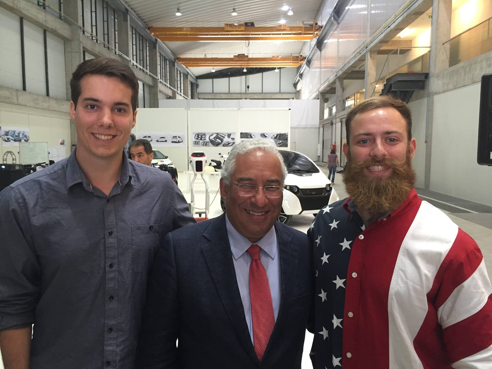
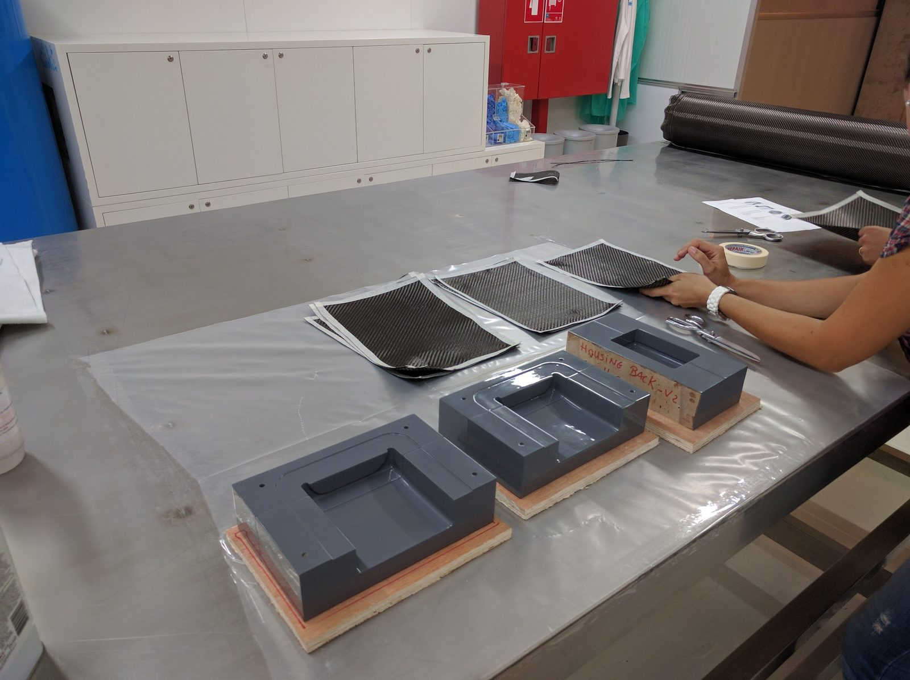
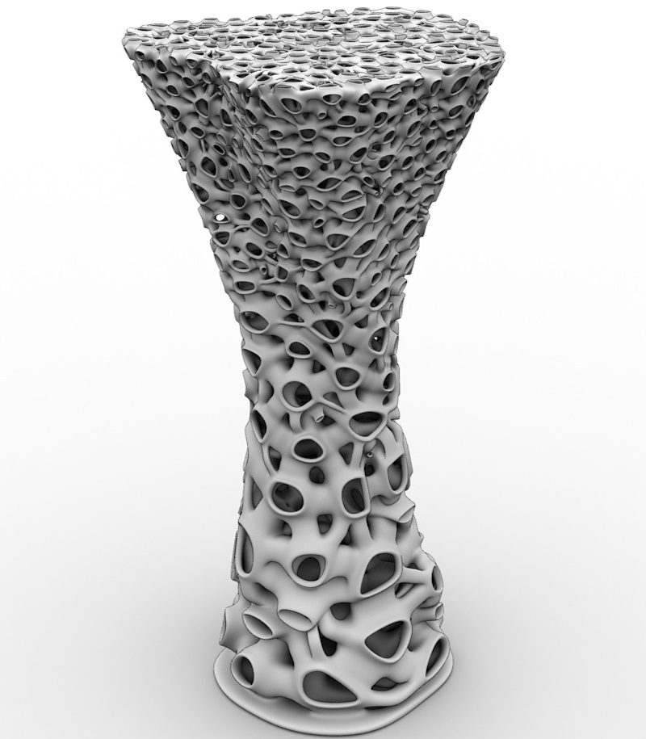
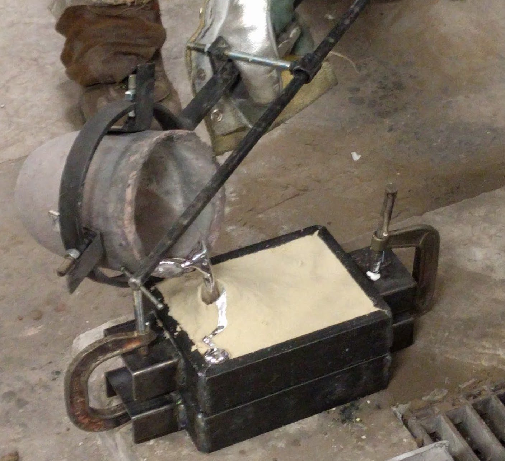

Process engineering · Materials science · Making things
Hi, I'm Sam.
I bring up complex manufacturing processes from scratch — PCBs, solar cells, printed electronics — and spend my free time building things in the shop.

About
I'm a Process Engineering Manager at SpaceX, working on providing high-speed, low-latency internet to the world with Starlink. I graduated from MIT in 2018 with a Bachelor's degree in Materials Science and Engineering.
Since then I've been involved in a wide range of projects: reliability testing the solar arrays and battery packs on the Dragon spacecraft; formulating custom blends of injection-molding plastics, printed electronics and inks, and radome coatings and materials for high-volume consumer electronics; and, over the last several years, creating and leading a team to bring up greenfield manufacturing of printed circuit boards (now the largest PCB manufacturer in North America) and solar cells (soon to be the largest in North America as well) for Starlink — from initial conception, buyoff, and capital procurement (>$1B), through process design, layout, facilities and construction design, install and commissioning, engineering and production org hiring, and process bring-up to steady state and handover.
I specialize in process engineering and in bringing extremely complex manufacturing processes up from scratch, cradle to grave.
At MIT I worked on a variety of materials science research and prototyping projects, and I've kept building since: I've made my own electron microscope that can "see" atoms, injection-molded custom yo-yos, designed and built a carbon fiber bike, and built a handful of 3D printers and CNC machines. I always have a few things in the works.
Outside of work I'm an avid backpacker, camper, hiker, rock climber, canoer, rower, cook, baker, and entrepreneur. Lately I've been doing more woodworking and stained glass.



At a glance
Focus areas
- Process engineering
- Composites
- Polymers and adhesives
- Mechanical design
- Additive manufacturing
- Electrochemistry
- Mechanics of materials
Industry experience
- SpaceX — Starlink engineering manager, solar cells
- SpaceX — Starlink engineering manager, PCB
- Apple — iPhone product design intern
- CEiiA — engineering intern (Portugal)
- MIT EEL — undergraduate research
- MIT Grossman Group — undergraduate research
Other interests
- Camping, backpacking, canoeing
- Cooking and baking
- Travel
- Rock climbing
- Consumer technology
- Woodworking and stained glass
Internships
While at Apple, I worked primarily on the AirPower wireless charging mat and the next-generation iPhone 8 and 8 Plus. I designed and fabricated several test setups in collaboration with electrical engineering, materials, and product design teams for benchmarking technologies and conducting user experience studies. I extensively used NX CAD, ANSYS mechanical, thermal, and electromagnetic simulation software, and MATLAB.
At CEiiA, I performed market analysis and research on battery management system (BMS) options for a large 30 kg UAV. I designed multiple BMS options in Eagle and had them manufactured and tested. I also performed several carbon fiber layups for another intern's 3-axis gimbal design.
Skills
Software
- Siemens NX and Teamcenter
- SolidWorks
- ANSYS (mechanical, thermal, electromagnetic)
- Mastercam
- PCB design (Altium, Eagle)
- MATLAB
- Autodesk Revit and Bluebeam
Tools and processes
- Mechanical testing (Instron)
- Characterization: FTIR, TGA, DMA/TMA, XRD, SEM/EDS, DSC, STM
- Subtractive: mill, lathe, laser cutter, waterjet
- Additive: FDM, SLA, SLS; flexo, gravure, and screen printing
- Composite design and layup
Electrical
- PCB design and fabrication
- Soldering
- Arduino and embedded
- Oscilloscope
- Sensors
Practical experience in
Composite design and layup
Designed and laid up projects in carbon fiber, fiberglass, and burlap — motorcycle and racecar fairings, gimbal housings, bike frames and seats, and more.

Product design
Proficient in NX, SolidWorks, Rhino, ANSYS mechanical, thermal, and electromagnetic packages, Eagle, MATLAB, and others. Interned on the Apple iPhone product design team.

Manufacturing
Machining, 3D printing (SLA, FDM, SLS), composite layup, casting, welding, thermoforming, injection molding, and roll-to-roll and printing technologies.

Casting, welding, metal treatments
Worked extensively in the MIT Forge casting metals, welding, and testing heat treatments, supplemented by several metallurgy classes.
Read about the casting sand project →Email me at sbelden42@gmail.com — thanks for looking!